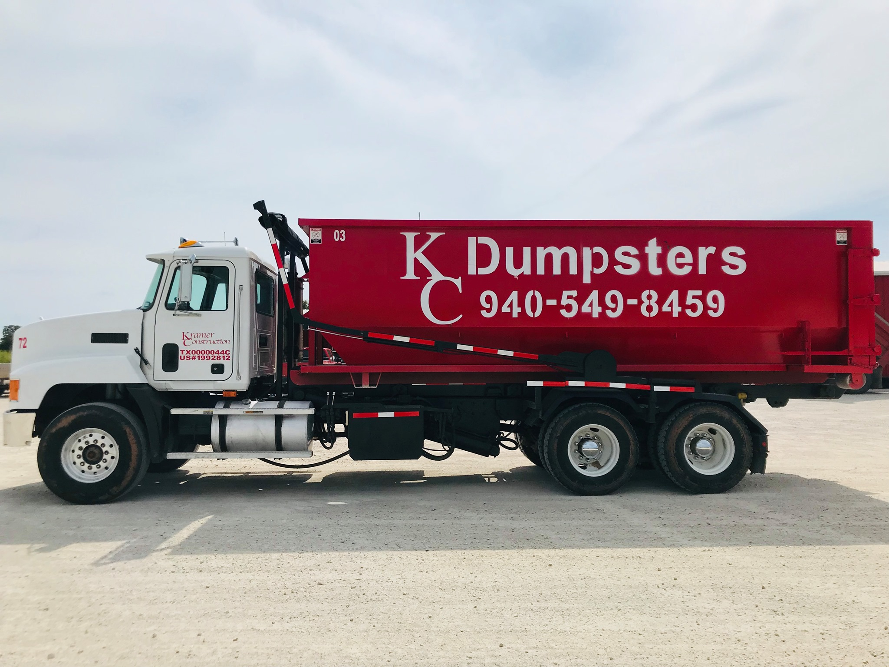

Roll-off
Temporary containers, swaps, and final pulls
Delivery timing, placement, restricted materials, loading limits, swaps, and pickup requests.
Open roll-off pageRequest service, check route notices, review service-area guidance, or contact the office. Roll-off work, rural service, and city information are separated so each request lands in the right queue.

Each service line has different rules, timing, and contact needs. Start with the page that fits the job.
Delivery timing, placement, restricted materials, loading limits, swaps, and pickup requests.
Open roll-off pageService starts, missed-pickup reporting, cart issues, route notices, and billing questions for rural accounts.
Open rural trash pageCity Hall contact details, residential and commercial route guidance, bulk pickup notes, and cart reminders.
Open city informationWeather, truck issues, and route balancing can change arrival order. Check route notices before reporting a missed stop.
Material above the rail or lid line may need correction before service can be completed.
Address, access, rental time, and container size all affect scheduling and quote review.
Customer sends the address, service type, and access notes the office needs to review.
Office staff review location, timing, service rules, and account status.
The office confirms timing or follows up if access, pricing, or service details need review.
Service activity, tickets, notices, and invoices stay attached to the account record.